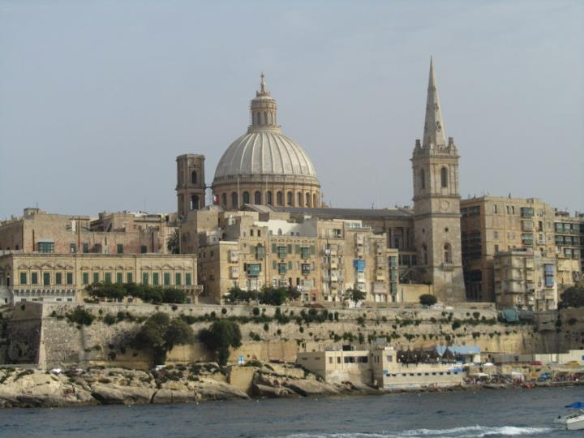

Malta
What to See
Malta is rich in history and natural beauty. Key attractions include Valletta, Mdina, the Blue Lagoon, Ħaġar Qim Temples, and the stunning beaches of Golden Bay and Mellieħa.
A Brief History of the City
Malta's history spans over 7,000 years, featuring ancient megalithic temples, Roman influence, medieval knights, and British colonial heritage. This blend of cultures is reflected in its architecture, traditions, and cuisine.
Top 10 Attractions
- Valletta
- Mdina
- Blue Lagoon (Comino)
- Ħaġar Qim Temples
- Golden Bay Beach
- Mellieħa Bay Beach
- St. John's Co-Cathedral
- Upper Barrakka Gardens
- St. Peter's Pool
- Popeye Village
What to Bring
- Swimwear and beach essentials
- Comfortable walking shoes
- Sun protection (sunscreen, hat, sunglasses)
- Lightweight clothing
- Travel adapter (Type G socket)
- Camera or smartphone for photos
- Guidebook or map
- Reusable water bottle
- Personal medications
- Light jacket for cooler evenings
Most Famous Food
Pastizzi: A beloved Maltese pastry filled with ricotta cheese or mushy peas. Originating from Sicily, pastizzi became a staple in Malta due to the island's historical connections with the Knights of St. John.
Currency
The currency in Malta is the Euro (€).
Best Time to Visit
Spring (April to June) and Autumn (September to October) offer pleasant weather and fewer tourists. Summer is ideal for beach activities, while winter is mild and perfect for exploring historical sites.
Prices Overview
Malta is known for being affordable. Accommodation ranges from budget hostels at €15 per night to mid-range hotels at €60-€120 per night. Dining out is inexpensive, with meals costing between €8 and €25.
Fun Facts
- Malta is home to the oldest free-standing structures in the world, dating back to 3600 BC.
- The Maltese language is the only Semitic language written in the Latin script.
- Valletta, Malta's capital, is a UNESCO World Heritage Site.
- Malta has a rich maritime history, with the Grand Harbour being one of the best natural harbors in the world.
- The island hosts the annual Isle of MTV music festival, attracting thousands of visitors.
Visitor Testimonials
"Malta's blend of history and natural beauty is unparalleled. Exploring the ancient temples and relaxing on the beaches made my trip unforgettable."
"The vibrant culture and friendly locals in Malta made my visit truly special. Highly recommend visiting Valletta and Mdina!"
Follow My Adventures
Stay connected and follow my journey through the links below: